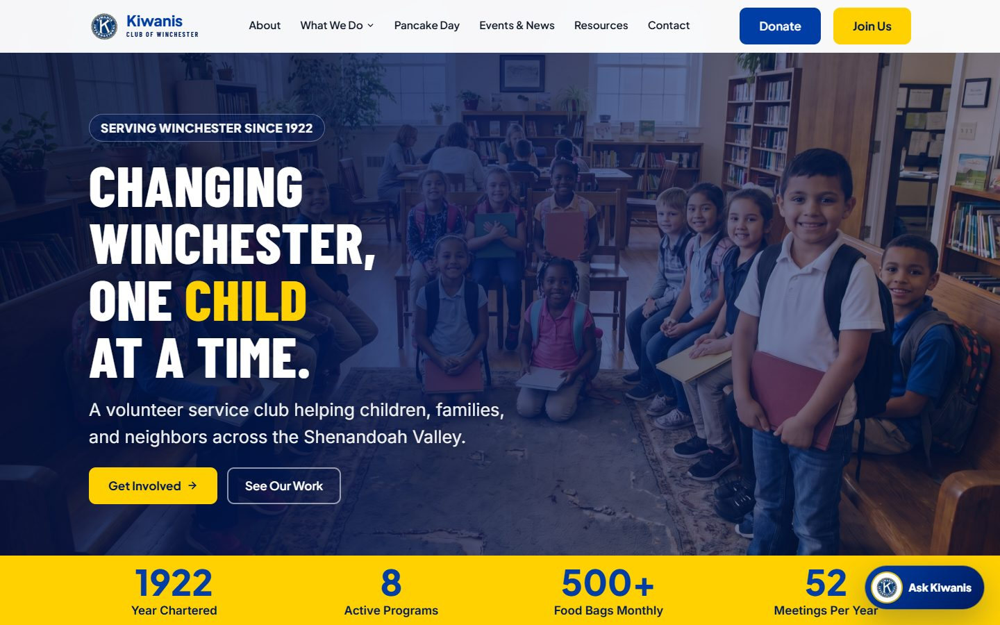
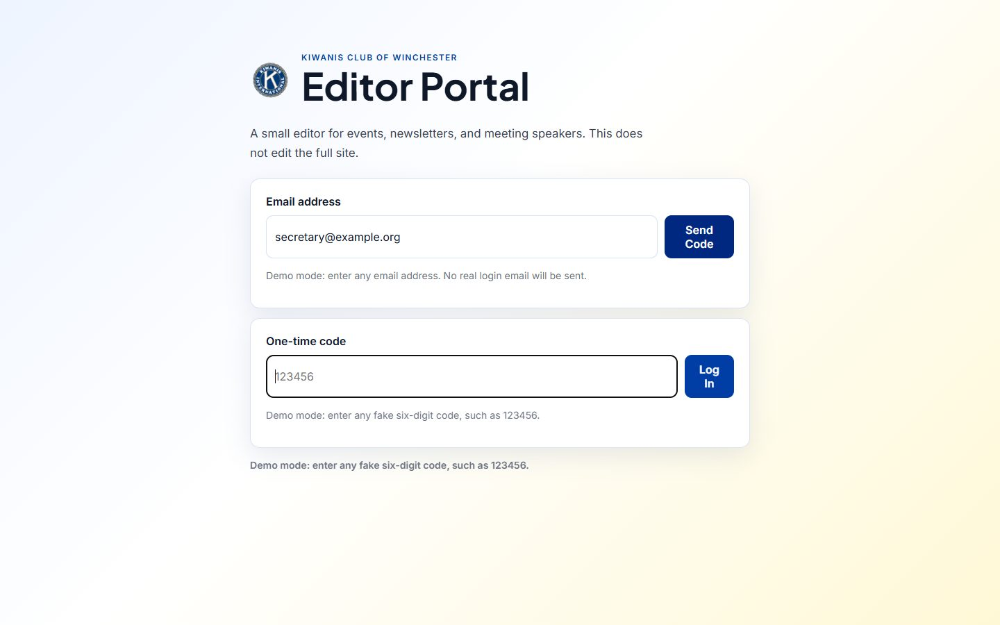
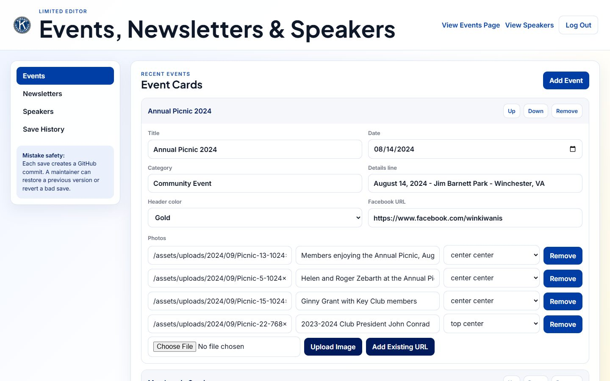
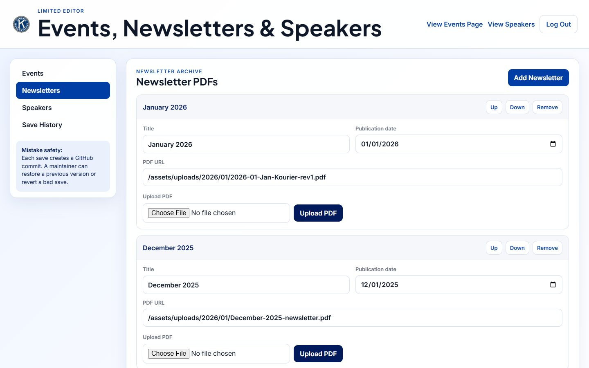
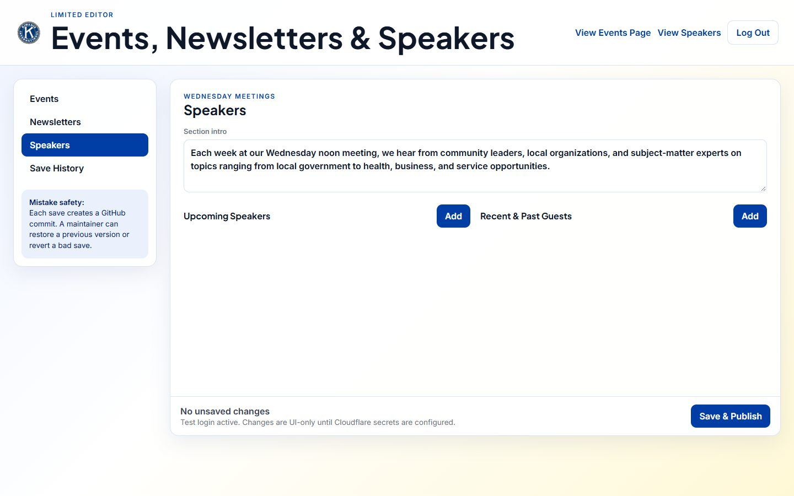
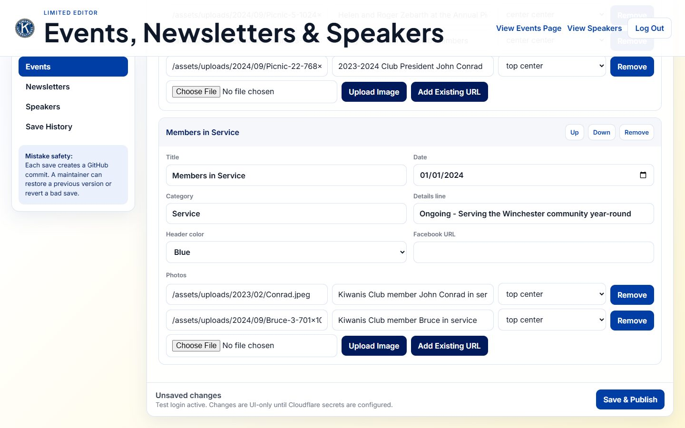
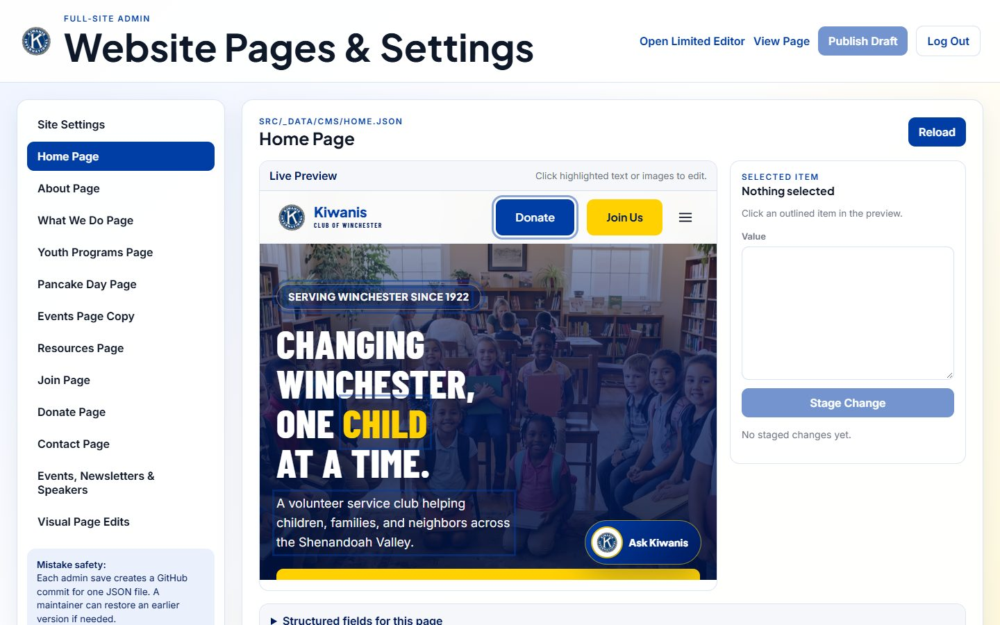
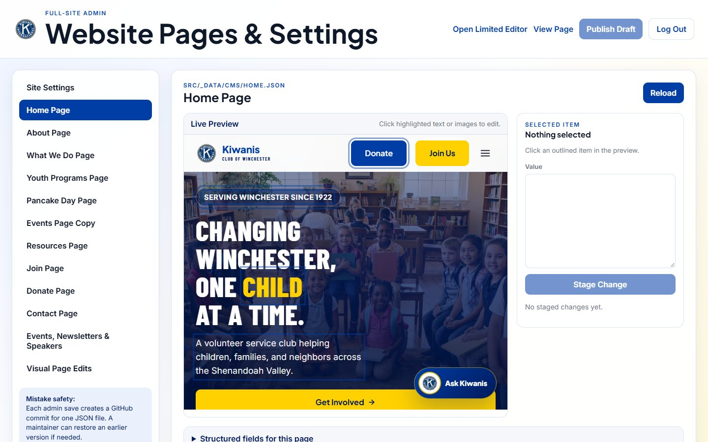
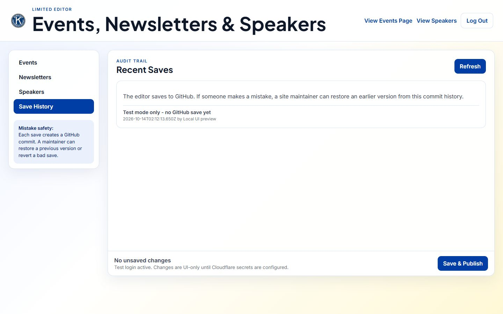

1Start here
The new website is a fast, modern site. Club members edit it through two simple web pages, called portals. They never touch code.

The website
Preview address today: kiwanis-winchester.pages.devFinal address after go-live: winvakiw.org (still the old WordPress site today; see Go-live).
Editor Portal
/editor/ — for routine updates: event photo cards, newsletter PDFs, and meeting speakers. Safe for any approved volunteer.Admin Portal
/admin/ — for trusted administrators: page headlines and text, images, meeting details, contact info, and site settings.Nothing is ever lost
Every save is recorded as a new version in the club's GitHub account. Any earlier version can be restored with one click (see Undo & restore).How a change reaches the website
- An approved person logs in to a portal with their email (a 6-digit code is emailed to them; no passwords).
- They make the change and click Save & Publish (Editor) or Publish Draft (Admin).
- The change is saved as a new version in the club's GitHub account (the "filing cabinet").
- Cloudflare (the "web host") sees the new version and rebuilds the site. The change is live in about 1–2 minutes.
2Where things stand
Status as of October 13, 2026.
Done
| Item | Detail |
|---|---|
| DoneNew website built | Every page of the old WordPress site rebuilt with no content lost: Home, About (with club history), What We Do, Youth Programs, Pancake Day, Events & Newsletters, Resources, Join, Donate, and Contact. |
| DoneEditing portals | Editor Portal and Admin Portal with email-code login, live preview, staged drafts, and one-click restore. |
| Done"Ask Kiwanis" assistant | An AI helper on the site that answers visitor questions about meetings, programs and joining. |
| DoneClub GitHub account | The site's files now live in the club's own GitHub organization, Winchester-Kiwanis (billing contact: winchesterkiwanis@outlook.com). |
| DoneSecurity clean-up (Oct 13) | Removed the temporary "board demo" login that let anyone publish changes. Turned off demo mode on the live site. Verified the old demo login is rejected. |
Still to do
| Item | What it means / who |
|---|---|
| AReconnect GitHub → Cloudflare | When the files moved to the club's GitHub, Cloudflare stopped rebuilding automatically. A one-time approval in GitHub fixes it (steps in Go-live, step 1). Cameron, ~10 minutes. |
| BTurn on login emails | Portal logins email a 6-digit code. That needs a free email-sending service (Resend) set up for winvakiw.org. Until then, nobody can log in to the live portals. Needs access to the winvakiw.org domain settings. |
| CList the approved editors & admins | The club decides who may edit. Their emails go into two lists in Cloudflare (Managing who can edit). |
| DPoint winvakiw.org at the new site | The domain still shows the old WordPress site. Switching it is a DNS change at the domain registrar (Go-live, step 4). |
| EMove accounts fully into the club's name | Hosting (Cloudflare) and the publishing key currently sit under Cameron's personal accounts. Club officers should be added as owners so the club never depends on one person (Accounts & ownership). |
3Logging in
There are no passwords. You prove who you are with a code sent to your email.
- Go to [website]/editor/ (routine updates) or [website]/admin/ (full site). Bookmark it; it isn't linked from the public menu on purpose.
- Type your email address and click Send Code. Only approved emails receive a code. Anyone else sees the same message but gets nothing.
- Check your inbox for "Your Kiwanis editor code". Type the 6 digits and click Log In. Codes expire after 10 minutes; just request a new one if needed.
- You stay logged in for about 8 hours on that browser. Click Log Out on shared computers.

/admin/ and /editor/. Editors can only open /editor/.4Tutorial: the Editor Portal
For the everyday updates: event cards with photos, newsletter PDFs, and Wednesday meeting speakers. It can't break the rest of the site.

Add or update an event card
- Open the Events tab and click Add Event (top right). A new card appears.
- Fill in Title, Date, Category (e.g. "Community Event"), and the Details line (date, place, city).
- Optional: pick a Header color and paste the event's Facebook URL.
- Photos: click Choose File, pick a photo (JPG, PNG, WEBP or GIF), then Upload Image. Type a short caption describing the photo; this is also read aloud to blind visitors. Use the crop dropdown (e.g. "top center") if a face is cut off.
- Use Up/Down to reorder cards and Remove to delete one.
- Click Save & Publish at the bottom when finished.
Post a newsletter (The Kourier)

- Open Newsletters and click Add Newsletter.
- Enter the title (e.g. "October 2026 Kourier"), the date, and the year.
- Upload the PDF (PDFs only here), then Save & Publish.
Update meeting speakers

- Open Speakers. Edit the short introduction paragraph if needed.
- Under Upcoming Speakers click Add and enter date, name, organization and topic.
- After a speaker has presented, move them to Recent & Past Guests: add them there and remove them from Upcoming.
- Click Save & Publish.

5Tutorial: the Admin Portal
For administrators: change any page's headlines, paragraphs and images by clicking them in a live preview.

Edit text or an image by clicking it
- Pick a page on the left, e.g. Home Page.
- In the Live Preview, editable text and images are outlined. Click the one you want to change.
- The Selected Item box on the right shows its current value. Edit the text, or use Upload Image to replace a picture.
- Click Stage Change. That puts the edit into your draft, which isn't live yet. Repeat on as many pages as you like.
- When everything looks right, click Publish Draft (top right). All staged edits go live together.

Edit things that are hard to click
Below the preview, open Structured fields for this page. It lists every field for that page (headings, buttons, lists) as a simple form. Edit, then Stage Page, then Publish Draft.
What each item on the left controls
| Item | Controls |
|---|---|
| Site Settings | Meeting day/time/place, contact email, social links, footer details used across every page |
| Home … Contact Page | The headlines, text and images of that page |
| Events Page Copy | The introduction text on the Events page (the event cards themselves are in the Editor Portal) |
| Events, Newsletters & Speakers | The same content as the Editor Portal, for admins |
| Visual Page Edits | Text and images captured from the rendered pages, so nearly anything visible can be edited |
src/functions/api/kiwanis-assistant.js too (see Technical reference).6Undo & restore: fixing a mistake
Nothing anyone does in the portals can be permanent. Every publish is saved as a version, so you can go back. Use the simplest option that works.
Option 1 — Restore inside the portal (easiest)

- Editor Portal: open Save History and click Refresh. Admin Portal: select the page, then scroll to Recent saves for this file.
- Find the last save that was correct (each one shows who saved it and when).
- Click Restore on it. The portal saves a new version that matches the old one, so even the restore can be undone.
- Wait 1–2 minutes and check the public page.
Option 2 — Roll the whole website back (Cloudflare)
Use this if the site looks broken and you aren't sure what changed.
- Sign in at dash.cloudflare.com → Workers & Pages → kiwanis-winchester → Deployments.
- Find the last deployment from a time the site looked right.
- Open its ⋯ menu → Rollback to this deployment, then confirm. The whole site switches back within seconds.
Option 3 — Undo a specific change in GitHub (for a web volunteer)
- Open github.com/Winchester-Kiwanis/kiwanis-winchester → Commits. Each portal save appears as e.g. "Editor update: events, newsletters, and speakers (name@email)".
- In GitHub Desktop (free app): History → right-click the bad commit → Revert changes in commit → Push origin.
- Cloudflare rebuilds the site from the reverted version.
7Managing who can edit
Access is controlled by two email lists stored in Cloudflare. Only people on a list can receive a login code.
| List (Cloudflare setting) | Who | Can open |
|---|---|---|
EDITOR_ALLOWED_EMAILS | Volunteers who post events, newsletters, speakers | /editor/ |
ADMIN_ALLOWED_EMAILS | 2–3 trusted administrators | /admin/ and /editor/ |
Add or remove a person
- Sign in at dash.cloudflare.com → Workers & Pages → kiwanis-winchester → Settings → Variables and Secrets (Production).
- Edit the right list. Emails are separated by commas with no spaces, e.g.
president@winvakiw.org,secretary@winvakiw.org. - Save, then go to Deployments and choose Retry deployment on the newest one so the change takes effect.
demo@winvakiw.org address from the board demo. Remove it when the real emails are entered. It can no longer log in, but it shouldn't be on the list.secretary@winvakiw.org survive officer changes. When someone leaves their role, remove their personal email the same day.8Go-live checklist
Do these in order. Steps 1–3 make editing work; step 4 makes winvakiw.org show the new site.
1. Reconnect GitHub to Cloudflare (re-enables automatic publishing)
- Signed in to GitHub as an owner of Winchester-Kiwanis, open github.com/apps/cloudflare-workers-and-pages → Configure.
- Choose the Winchester-Kiwanis organization and give it access to kiwanis-winchester (or all repositories), then save.
- In Cloudflare: kiwanis-winchester → Settings → Build → Git repository. Confirm it shows Winchester-Kiwanis/kiwanis-winchester. If it still shows the old owner, use Manage to reconnect it.
- In Variables and Secrets, set
GITHUB_OWNERtoWinchester-Kiwanis. - Test: make any small change in a portal (or GitHub) and confirm a new entry appears under Deployments within a minute.
2. Turn on login emails (Resend)
- Create a free account at resend.com with a club email address.
- Add the domain winvakiw.org. Resend shows a few DNS records; add them where the domain's DNS is managed, then click Verify.
- Create an API key. In Cloudflare Variables and Secrets, add
RESEND_API_KEY(type: Secret) with that key, andEDITOR_EMAIL_FROM=Kiwanis Website <website@winvakiw.org>. - Retry the latest deployment, then log in to
/editor/with an approved email to confirm the code arrives.
3. Enter the real approved emails
Fill in EDITOR_ALLOWED_EMAILS and ADMIN_ALLOWED_EMAILS as described in Managing who can edit.
4. Point winvakiw.org at the new site
- In Cloudflare: kiwanis-winchester → Custom domains → Set up a custom domain → enter
winvakiw.org, then repeat forwww.winvakiw.org. - Cloudflare shows the DNS record to create. Add it at the registrar where winvakiw.org is managed (today it points to the old WordPress host). If the domain's email runs through the same provider, change only the website records. Don't touch MX (email) records.
- Wait for Cloudflare to show the domain as Active (usually minutes, at most a day). Check winvakiw.org in a private browser window.
- Keep the old WordPress hosting for about a month as a safety net, then cancel it.
9Accounts & ownership
The club should always be able to reach every account below without depending on one person. Passwords and keys are intentionally not written in this document; keep them in the club's password manager.
| Account | What it does | Current owner | Recommended |
|---|---|---|---|
| GitHub organization Winchester-Kiwanis | Stores every version of the site's files | Cameron (only member). Billing email winchesterkiwanis@outlook.com | Invite 2 officers as Owners: Settings → People → Invite member |
| Cloudflare project kiwanis-winchester | Hosts and builds the website, stores the settings above | Cameron's Cloudflare account | Create a club Cloudflare account and move the project into it (a web volunteer recreates it from the GitHub repo and copies the settings), or add officers as members |
GitHub publishing key (GITHUB_TOKEN) | Lets the portals save versions to GitHub | Created under Cameron's GitHub | Replace with a fine-grained key from a club-owned GitHub account, limited to this one repository (Contents: read & write) |
| Domain winvakiw.org | The website address and club email | Club's existing registrar | Confirm which officer holds the registrar login |
| Resend (to set up) | Sends login codes | — | Create with a club email address |
10Technical reference
For a future web volunteer or developer.
| Layer | Tool |
|---|---|
| Site generator | Eleventy (11ty) 3 — templates in src/*.njk, content in src/_data/ |
| Hosting | Cloudflare Pages, project kiwanis-winchester; build npx @11ty/eleventy → output _site |
| Server code | Cloudflare Pages Functions in src/functions/ (the root functions/ files just forward to them) |
| Content | src/_data/editorContent.json (Editor Portal), src/_data/site.json and src/_data/cms/*.json (Admin Portal), src/_data/siteEdits.json (visual edits). Uploads go to src/assets/uploads/editor/ |
| Login | Email one-time code (Resend) → signed session token (EDITOR_AUTH_SECRET) |
| AI assistant | src/functions/api/kiwanis-assistant.js (Cloudflare Workers AI). Its facts are written in that file |
Cloudflare settings (Variables and Secrets)
| Name | Purpose |
|---|---|
EDITOR_AUTH_SECRET | Long random value that signs login sessions |
EDITOR_ALLOWED_EMAILS / ADMIN_ALLOWED_EMAILS | Who can log in (comma-separated) |
GITHUB_TOKEN, GITHUB_OWNER, GITHUB_REPO, GITHUB_BRANCH | Where the portals save (Winchester-Kiwanis / kiwanis-winchester / main) |
RESEND_API_KEY, EDITOR_EMAIL_FROM | Login-code emails |
EDITOR_COMMITTER_NAME, EDITOR_COMMITTER_EMAIL | Name shown on portal saves in GitHub |
KIWANIS_ASSISTANT_MODEL… | Which AI model the assistant uses |
EDITOR_DEV_MODE | Must stay off on the live site. When true, login codes are shown on screen. Removed Oct 13, 2026 |
Run the site on your own computer
- Install Node.js (LTS) and Git. Then:
git clone https://github.com/Winchester-Kiwanis/kiwanis-winchester.git - In that folder:
npm install, thennpm run dev, and openhttp://localhost:8080.
Rehearsal mode (safe demo)
With the site running on your computer, open http://localhost:8080/admin/?demo=1 or /editor/?demo=1. Enter any email and any 6-digit code. You get the full portal with sample data, and nothing is saved or published. This only works on localhost, never on the live site.
Change history
The full history of every change is in GitHub under Commits, and a full offline copy (with history) is included in this handover folder as Website-Source/kiwanis-winchester.bundle. Restore it with git clone kiwanis-winchester.bundle kiwanis-winchester.
11FAQ & glossary
I published and the site didn't change.
Wait 2 minutes and refresh (Ctrl+F5). If it still hasn't changed, check Cloudflare → Deployments. If there's no new entry, the GitHub connection needs attention (Go-live step 1).
I didn't get a login code.
Check spam. Make sure the email is on an approved list. Codes expire after 10 minutes. If nobody receives codes, Resend needs attention (Go-live step 2).
Can two people edit at once?
Yes, but they should edit different things. If two people change the same section, the later publish wins, and the earlier one is still in the history and can be restored.
What file types can I upload?
Event photos: JPG, PNG, WEBP or GIF. Newsletters: PDF only. Keep photos under about 2 MB; phone photos can be resized first.
Glossary
| Portal | The private editing page (/editor/ or /admin/) |
| GitHub | The "filing cabinet" that keeps every version of the site's files |
| Commit | One saved version in GitHub; every portal publish creates one |
| Cloudflare | The "web host" that builds and serves the site |
| Deployment | One build of the site that Cloudflare put online |
| Draft / Stage | Admin Portal edits collected before publishing them together |
| DNS | The domain settings that decide which server winvakiw.org points to |